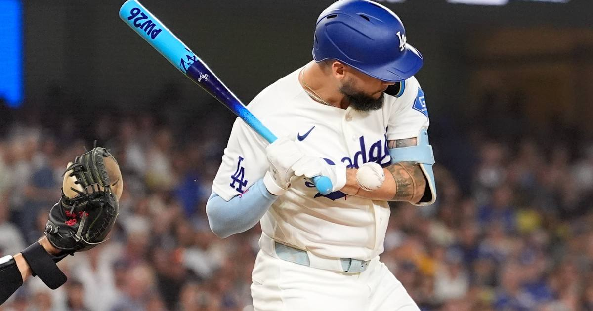

Dodgers close out Braves, win NLDS in four
Andy Pages broke a 1-1 tie in the seventh with a go-ahead two-run single, and the Dodgers are one series from the World Series.

Disclosure: this post contains affiliate links. I earn a commission on qualifying purchases.
The seventh inning decided it
Andy Pages broke a 1-1 tie in the seventh with a go-ahead two-run single at Truist Park. The Dodgers took Game 4 by a 4-1 final and closed out the NLDS in four games — no drama at the end, just a clean closeout on the road.
What's next
The NLCS opens Sunday. The Dodgers are still chasing the first three-peat by an NL club — and right now, they're the team this entire postseason runs through.
### By the numbers
• Game 4 final: Dodgers 4, Braves 1
• Series: Dodgers win NLDS in four
• Next up: NLCS Game 1 on Sunday
Watch
Source: DODGERS vs. BRAVES: Division Series Full Game 4 Highlights (October 7) | 2026 MLB Postseason via MLB — full Game 4 highlights including Pages' go-ahead single.
Gear up: [Fanatics](https://fanatics.93n6tx.net/WOLjqe) via Fanatics